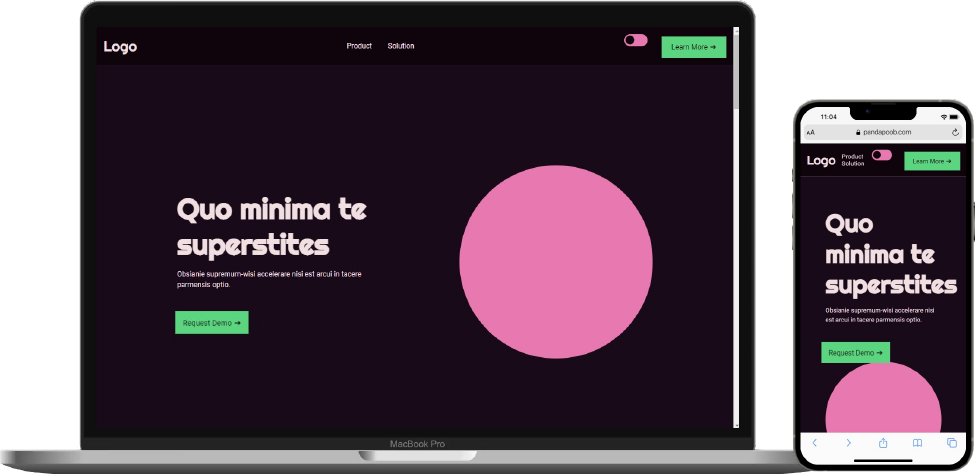

Mockup light mode

Mockup dark mode
Colors details
In this assignment I worked with colors and animations. For this specific website I chose to work with an analogous color palette, though it may seem monochromatic it is not because the hues are different. The primary colors for my light theme are white and a reddish pink. While the secondary are a darker brown and a darker pink. The accents are a bright green, that is a complementary color to the primary pink, and a bright periwinkle (mix of purple and blue). My dark themes color palette is simplified as I wanted the majority of the colors to be really dark to make it easier on the eye. Therefore I switched out my primary colors to very dark purples and made my secondary colors more saturated.
Animations details
For animations I have kept it simple. The button in my header has a scale animation to catch the user's eye however I kept it simple so it does not overrule the whole page and distract too much. Then I have added scroll animations to my sections with big headlines to make the experience more dynamic. I have also added a calm bounce animation to my graphics in my products section to make the section come alive.